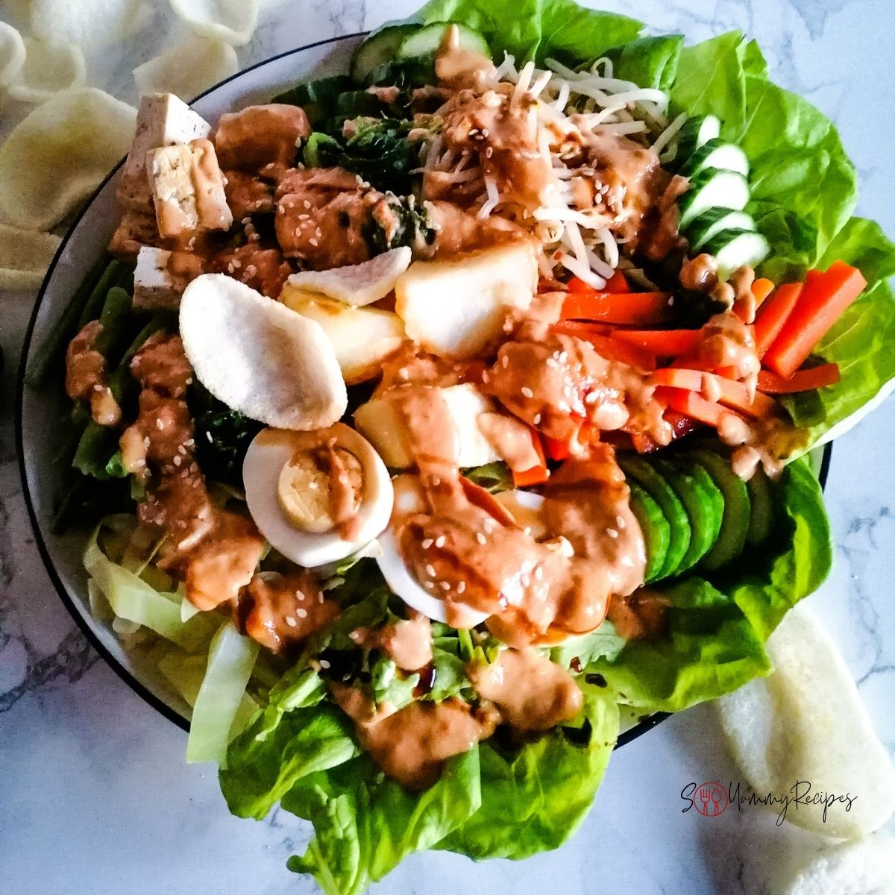
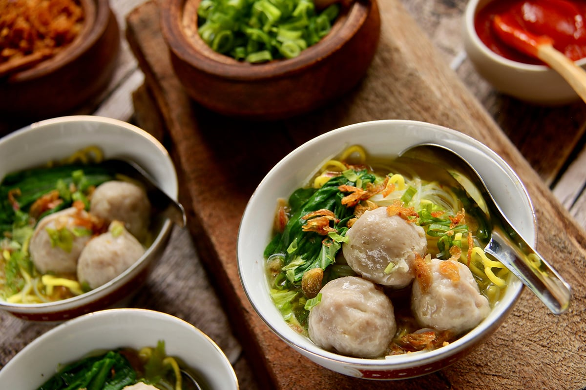

For the peanut sauce:
200 gr Roasted peanuts (Or fried peanuts. See the note).
4 tbsp Peanut butter (optional).
3 tbsp Palm sugar (Or dark muscovado sugar and dark brown sugar).
3 tsp Tamarind paste (see the note).
½ tsp Salt.
2 tbsp Sambal Terasi/ Sambal Oelek (see the note).
2 fresh bird’s eye red chillies (see the note).
¼ tsp Dry shrimp paste (or 1 tsp of fish sauce) - optional.
2 cups water.
2 tbsp Lime juice.
3 tbsp Kecap Manis (sweet soy sauce).
The vegetables and more:
125 gr Spinach (fresh or frozen).
150 gr Bean sprouts.
1 Lettuce.
½ Small cabbage.
100 gr Green beans.
1 large Carrot.
½ Cucumber.
200 gr Extra-firm tofu.
4 eggs.
For garnish:
Prawn crackers.
Fried onions (optional).
Kecap Manis/ sweet soy sauce.
For the sauce:
1.Using pestle and mortar, grind the peanuts with chilli, tamarind paste, sugar, salt, and shrimp paste (if using) until the nuts become as smooth as possible.
2.Add in lime juice, and water little by little as you mix it.
3.Add more water if the sauce is too thick. But do it little by little as you don’t want the sauce to become runny.
4.You can use the blender or food processor if you wish. Just put everything together and give it a blitz until you get a nice thick peanut sauce with a slightly runny consistency. Your sauce should be as thick as heavy cream (double cream).
For the vegetables:
1.Have the spinach blanched with hot boiling water for a minute or two, drain and set aside.
2.Soak the bean sprouts in hot boiling water for a minute or two, drain and set aside.
3.Cut the lettuce in thick slices.
4.Slice the cabbage thinly and boil for about 2-3 minutes until al dente. Drain and set aside.
5.Cut the green beans into 1-inch lengths, and parboil them. Set aside.
6.Cut the carrot in julienne sticks and boil them for about 5 minutes. Drain and set aside.
7.Boil the eggs, let them cool and slice. Set aside.
8.Cut potatoes in big cubes and boil until thoroughly cooked. Set aside
9.Cube the tofu and shallow-fry until slightly-light golden.
10.Slice the cucumber.
11.Arrange the vegetables on a plate however you like, then pour the peanut sauce generously over the veggies, and sprinkle some fried onions on the top if you use

1 fillet of smoked fish
4 pcs fried tofu
2 pcs of chayote
5 long beans
100 g young melinjo leaves
3 pcs young starfruit
10 pcs stinky bean / petai
1 pcs of tempe or fermented tempe
750 ml water + 5 tbsp creamer powder
1 cm galangal
2 bay leaves
2 tbsp oil
6 pcs onions
2 cloves of garlic
3 pcs of red chili with / without seeds
1 tsp kencur
1/2 tsp shrimp paste
1.Cut the tempeh and tofu into bite-sized pieces. Optionally, marinate both ingredients with a bit of salt and turmeric. In a pan over medium heat, shallow fry the tempeh and tofu pieces with cooking oil until golden brown. Meanwhile, soak the glass noodles and beancurd skin with water until soften. Chop long beans, white cabbage, carrot and aubergine into smaller pieces. Clean and rinse prawns. Set all ingredients aside.
2.Chop off the green section of the lemongrass and take only the bottom-most part. Lightly pound the lemongrass. Then, blend shallots, dried shrimps and turmeric with water until fine.
3.In a wok, add the blended ingredients and lemongrass to boil over high heat for 5 minutes. No oil is required.
4.Add water and let the dish boil at high heat for 5 minutes. Add dried bean curd, glass noodles, carrots, long beans, white cabbage and aubergine. Then, allow the dish to cook over medium heat for 8 to 10 minutes. Optionally, add red chillies for extra spice and colour.
5.Add thick coconut milk and stir to let the dish cook for another 5 minutes or until it begins boiling. Then, add prawns, tofu, tempeh, salt and cook over medium heat for another 5 minutes or until prawns are fully cooked. Turn off the stove and serve the dish immediately.

5 pounds beef bones, such as marrow bones and beef hind shank
1 (2-inch) piece ginger, peeled
8 cloves garlic, lightly crushed
2 (2-inch) cinnamon sticks
6 pods green cardamom, lightly crushed
6 whole cloves
12 whole peppercorns
1 small carrot, very thinly sliced crosswise
4 cups lightly packed baby spinach, or bok choy
18 store-bought or homemade Asian-style meatballs
3 cups cooked Asian-style egg noodles
1/2 cup store-bought or homemade crisp-fried shallots
4 large hard boiled eggs, optiona
1 Gather the ingredients.
2 Place the bones in a large pot. Cover with water, about 4 quarts. Bring to the boil over high heat. Skim off any scum and impurities that rise to the top.
3 Reduce the heat to low. Add the ginger, garlic, cinnamon, cardamom, cloves, and peppercorns. Simmer, stirring occasionally, at least two hours.
4 Strain the broth. Return the broth to the the pot. Discard the bones and aromatics. Heat the broth over medium heat until it comes to a lively simmer.
5 Using a kitchen spider, blanch the sliced carrot and spinach separately in the hot broth. Remove from the broth and place carrots and spinach in separate bowls
6 Drop in the meatballs into the broth. Cook until the meatballs are warmed through, about 5 minutes. Alternatively, if the meatballs are raw, cook until an instant-read thermometer inserted into the center registers 160 F, about 10 minutes.
7 Divide the noodles among 4 bowls. Divide the carrot slices and spinach between the bowls next to the noodles. Ladle the hot soup and meatballs directly into the bowls.
8 Top each bowl with crisp-fried shallots and split hard-boiled eggs, if using. Serve immediately.